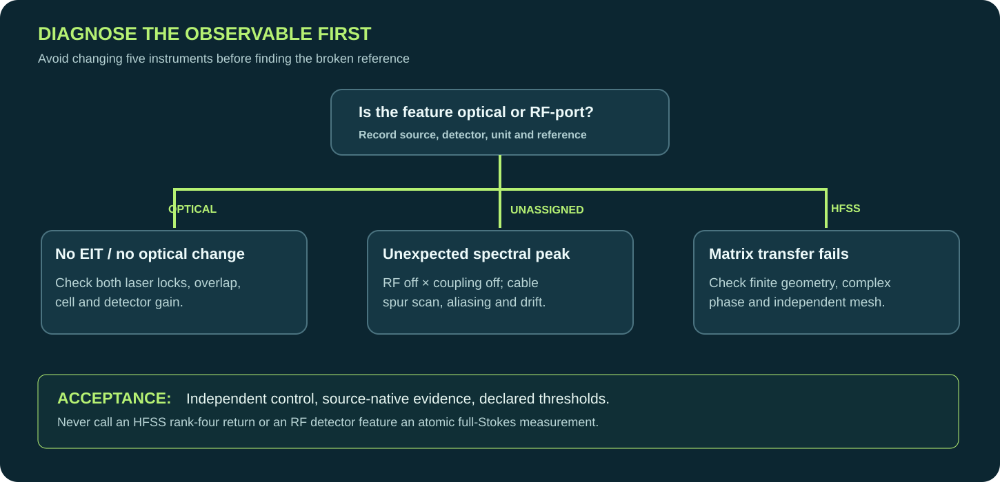

Select a scientific symptom.
Loading original source-linked checks…
Structured, source-backed fault isolation for Rydberg optical/atomic receivers, RF systems, HFSS finite calibration and scientific software. Answer each check, track what is known and export a diagnostic record for a supervisor or reproducible research run.
Rule-based educational assistant — not an LLM or a substitute for laboratory expertise. Checkboxes record checks performed, not that they passed.

Loading original source-linked checks…